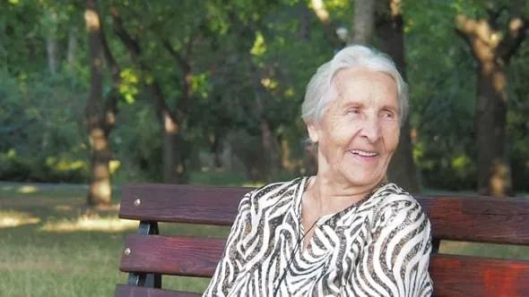

At 74, She "Balances" Her Type 2 Diabetes.
This is her story...

Healthy And Alive
5th August 2021 / 384,713 views
Today, we talk to Carol, a 74-year-old woman who reversed her diabetes. She tells us how...
Hello, this is Carol.
I had been suffering from type 2 diabetes for several years.
My weight had increased, I often felt tired and I had to inject myself several times a day to monitor my blood sugar.
Not exactly a dream life.
But the saddest thing for me was when I had to turn down cake for my grandchildren's birthday party
and they would ask me "but grandma, why don't you eat like us?"
It broke my heart....
Not to mention the stress of going to see my doctor. Every time, he would scare me by telling me about the \
complications of diabetes: heart disease, amputation...or even going blind!
The worst part, I think, was the food. Nothing tasted good anymore and I often felt like I was eating cardboard.
But with time, I resigned myself to it. After all, there are several diabetics in my family, so I figured it was my fate.
Yet one day, a very good friend sent me a video. She told me that diabetes could be stopped naturally.
Of course I was skeptical...if it was true, why hadn't my doctor told me about it?
But after all, I had nothing to lose so I watched this video.
And I must say I was very surprised!
Inside, I learned that an American doctor from a prestigious university had found a natural and effective way to
normalize blood sugar levels, using what he calls a "forgotten method".
And his patients manage to get rid of their diabetes, in almost 100% of the cases.
So I followed the recommendations of this video, without much hope I must admit.
During the first days, I didn't see much change, but I decided to continue anyway.
And after a few weeks,
my blood sugar started to normalize: I felt less tight in my pants, and I also had more energy.
After a few more days, I even received compliments from my husband. He told me that I looked "good". Now that's good news!
After a month, I had a routine appointment with my doctor. Well, he was "extremely surprised" (his words) by my blood
sugar numbers. I was at 103 when I went to see him, at 9:30 in the morning.
Since then, I'm alive again. No more prickles in my fingers, no more stress during meals.
And I even allowed myself some chocolate cake for my grandson's birthday. He was so happy.
Every day I thank God, and especially my friend, for sending me this video."
Want to know more?